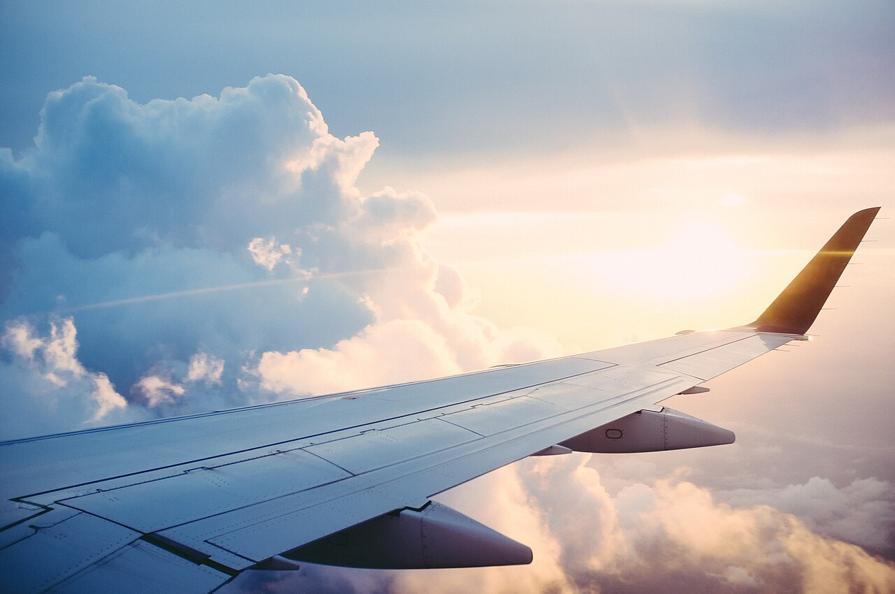
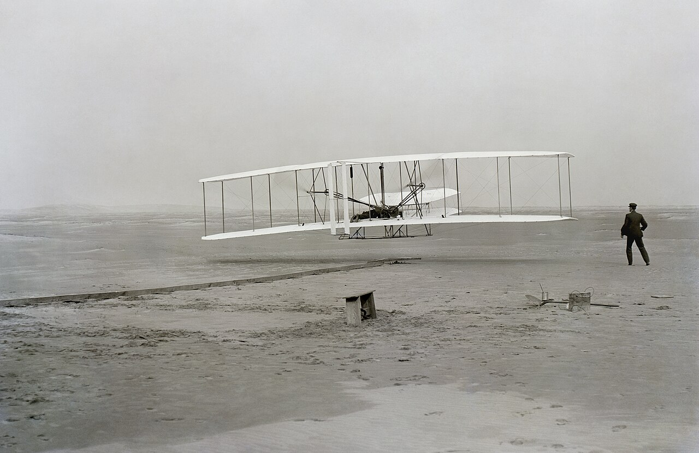
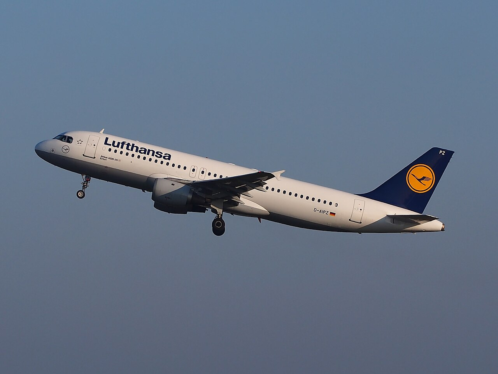
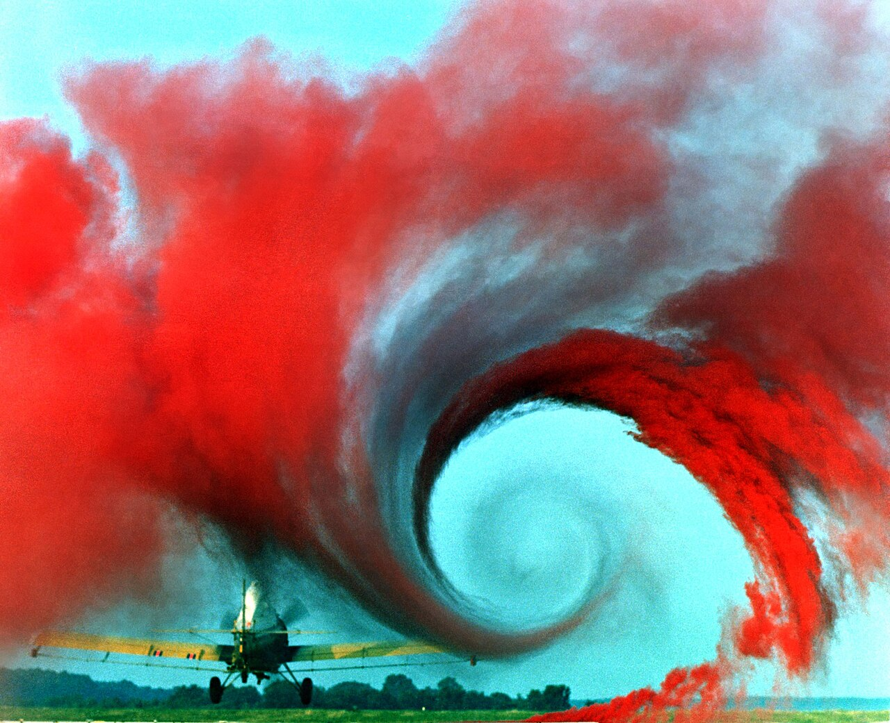
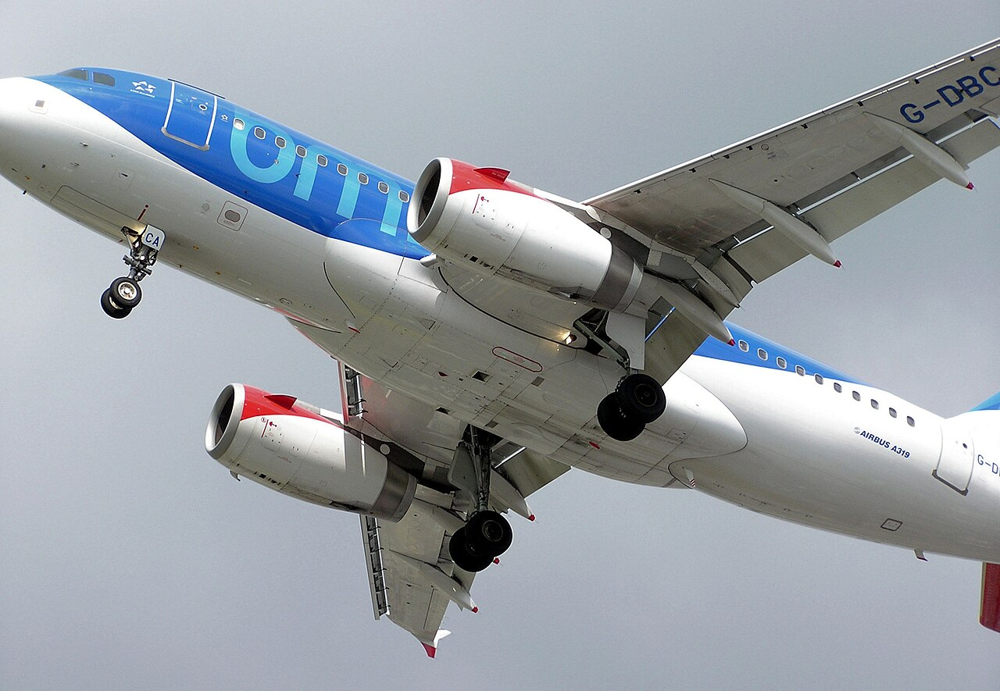
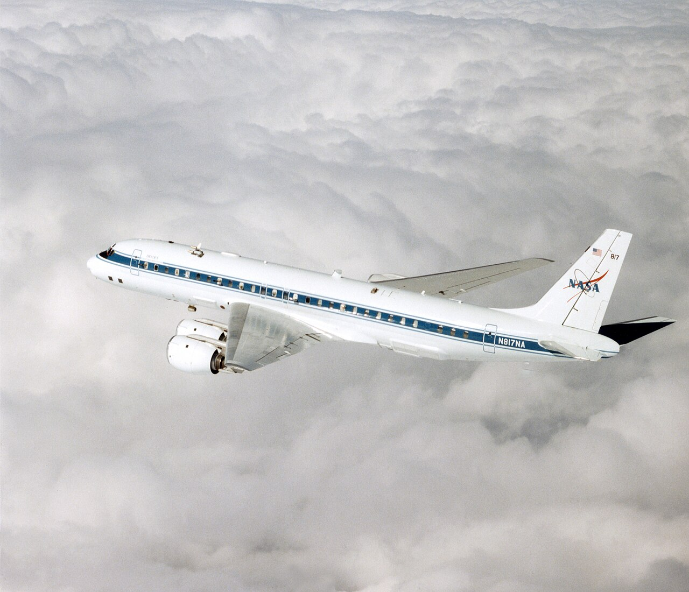
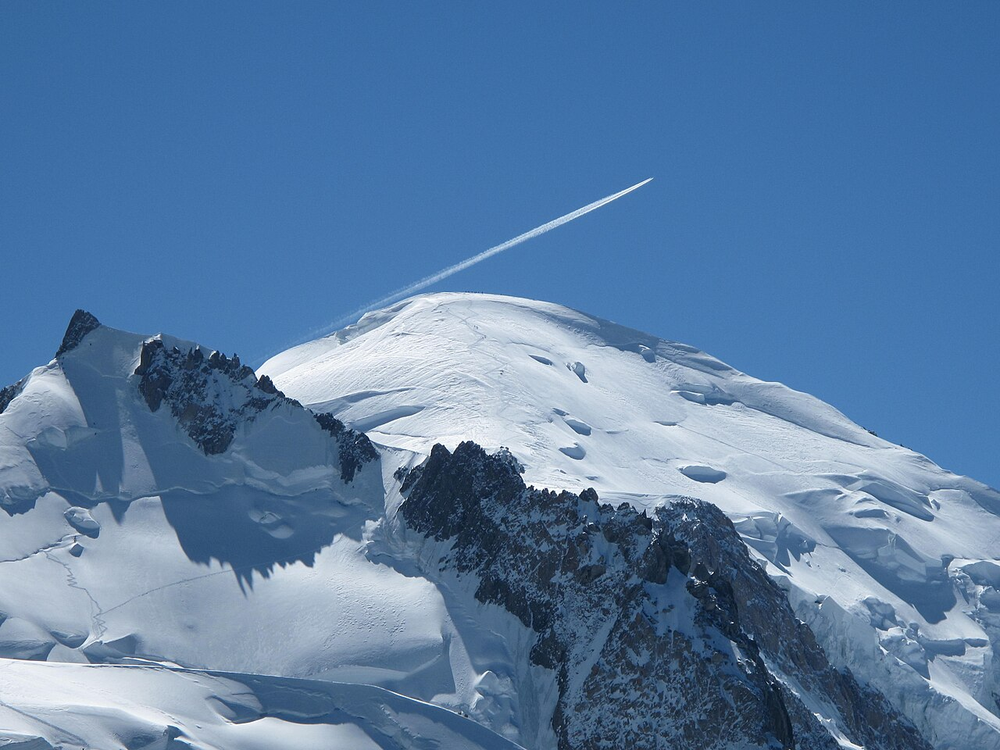

アメリカ東海岸、ノースカロライナ州の砂丘。1903年12月17日の朝、ライト兄弟の弟オービルが操縦する「ライトフライヤー号」が地面を離れました。飛んでいたのは12秒、距離は37m。エンジンで飛ぶ飛行機が、人を乗せて空を飛んだ最初の瞬間とされています。

技術・発明Technology
写真：A wing tip of an airplane／U.S. Department of Agriculture（2018年、パブリックドメイン）
飛行機は、どうやって空を飛ぶ？
金属でできた重い飛行機が、なぜ落ちずに空に浮かんでいられるのか。答えのカギは、翼が空気を「下へ押す」ことにあります。4つの力の図と翼の断面図で、そのしくみをのぞいてみませんか。

それから120年あまり。いまの旅客機は、高さ約1万mの空を、時速約900kmで飛んでいます。乗っているのは何百人もの人と、その荷物です。空中には、つかまる場所も、立つ地面もありません。それなのに、なぜ飛行機は落ちずに浮かんでいられるのでしょうか。
In a word
翼が空気を下へ押し下げ、その押し返しで上へ持ち上げられているから。
飛んでいるあいだ、4つの力が綱引きをしている
飛行機には、いつも4つの力がかかっています。下へ引っぱる「重力」、それに逆らって上へ持ち上げる「揚力（ようりょく）」、前へ進ませる「推力（すいりょく）」、そして空気の抵抗で後ろへ引き戻す「抗力（こうりょく）」です。
NASA（アメリカ航空宇宙局）の解説によると、揚力は重力と、推力は抗力と向き合っています。4つがつり合っていると、飛行機は同じ速さでまっすぐ飛び続けます。推力が抗力より強ければ速くなり、揚力が重力より強ければ上へのぼっていきます。
Fig.01飛行機にかかる4つの力

翼は、空気を下へ曲げている
では、揚力はどこから来るのでしょうか。NASAの説明はシンプルです。流れている空気が、物によって向きを曲げられると、揚力が生まれます。翼は、前から来た空気を下向きに曲げて後ろへ送り出します。
空気を下へ押せば、その分だけ翼は上へ押し返されます。ボートのオールで水を後ろへかくと、ボートが前へ進むのと同じ「作用・反作用」です。
このとき、翼のまわりでは圧力にも差ができます。上側の圧力は下がり、下側は上側より高くなります。「圧力の差が持ち上げる」と「空気を下へ曲げた反動で持ち上がる」は、別々の力ではありません。翼が空気の流れを曲げていることを、2つの側から見た説明です。
Fig.02翼の断面と、まわりの空気の流れ

パイロットが操るのは「速さ」と「翼の角度」
揚力の大きさは、空気の濃さ、翼の広さ、翼の形と角度、そして速さで決まります。このうち飛んでいる最中にパイロットが変えられるのが、速さと翼の角度です。なかでも効き目が大きいのが速さです。NASAが示す揚力の式では、揚力は速さの2乗に比例します。速さが2倍になると、揚力は4倍です。
Fig.03速さを上げると、揚力はどれだけ増える？
もうひとつの決め手が、前から来る空気に対する翼の角度です。翼を少し上向きにすると、空気をより大きく下へ曲げられるので、揚力が増えます。ただし上げすぎると、翼の上の流れがはがれて、揚力が急に落ちてしまいます。これが「失速」で、多くの翼ではおよそ15〜18度がその境目とされています。
逆にいえば、ゆっくり飛ぶと揚力は足りなくなります。そこで、速さが落ちる離陸と着陸のときに使うのが「フラップ」です。翼の後ろの板を下へ広げて、翼の反りを大きくします。反りが大きいほど、空気をより大きく下へ曲げられます。こうすると、遅い速さでも同じだけの揚力が出せます。

Fig.04離陸するまで
- FLAPフラップを出す翼の反りを大きくして、遅くても揚力が出るようにする
- RUN滑走路で加速するエンジンの推力で、どんどん速さを上げる
- ROTATE機首を上げる十分な速さになったら、翼の角度を上向きにする
- LIFT地面を離れる揚力が重さを上回り、機体が浮き上がる
- CLIMB車輪をしまう上昇しながら車輪をしまい、速さが上がるとフラップも戻す
うすい空気は、一見不利、実は燃料の節約になる
旅客機がふだん飛ぶのは、高さ9,400〜11,600mほど。このあたりの空気の濃さは、地上の3分の1ほどしかありません。空気がうすいと、同じ速さなら抗力（空気の抵抗）が小さくなります。
ただし、空気がうすいと揚力も小さくなります。それを補うのが速さです。うすい空気の中を、時速900kmほどの速さで飛びます。低い空と同じくらいの抵抗のまま、ずっと速く、つまり同じ時間でより遠くまで進めるわけです。実際の飛ぶ高さは、こうした得と、高い空ではエンジンの力が落ちるという損との釣り合いで決まるとされています。


260トンを、翼で持ち上げる
約260t
離陸するときの重さの上限。人や荷物、燃料をふくむボーイング787-10の最大離陸重量（260,400kg）
約900km/h
目的地へ向かって安定して飛ぶときの速さ（巡航速度）の例ボーイング787、音の速さの0.85倍（マッハ0.85、約903km/h）
15〜18度
翼の角度を上げすぎて「失速」する境目の目安多くの翼の場合
ここが面白い！
よく聞く「翼の説明」は、実はまちがい
「翼の上は丸くふくらんでいて道のりが長い。だから上の空気は、下の空気と後ろで同時に出会うために速く流れ、圧力が下がる」──こんな説明を聞いたことはありませんか。NASAはこれを「まちがった揚力の説明」としてはっきり取り上げています。
実験やシミュレーション（コンピューターでの再現）で見ると、翼の上と下に分かれた空気は、後ろで同時に出会いません。上を通った空気のほうが、先に後ろの端に着きます。「同時に出会う」という前提が、そもそも成り立たないのです。
それに、上と下が同じ形の翼でも、平らな紙飛行機の翼でも、少し上向きの角度をつければ揚力は生まれます。この考え方では、背面飛行（さかさまに飛ぶこと）ができる理由もわかりません。大事なのは道のりの長さではなく、翼が空気の向きを曲げていること。上側の圧力が下がるのも、流れが曲げられているからです。
次に飛行機に乗ったら、離陸の前に、窓から翼の後ろ側を見てみてください。フラップが下がり、翼が空気を下へ押す準備をしているのが見えるはずです。
出典・参考
- Four Forces on an Airplane（NASA Glenn Research Center）：重力・揚力・抗力・推力と、それぞれ向き合う力
- What is Lift?（NASA）：流れが曲げられると揚力が生まれる、作用・反作用、上下両方の面が流れを曲げる
- The Lift Equation（NASA）：揚力は空気の密度・速さの2乗・翼の面積・揚力係数に比例する
- Incorrect Lift Theory #1（Equal Transit）（NASA）：「同時に出会う」説明がまちがいである理由
- Wright Flyer（Wikipedia 英語版）：1903年12月17日、最初の飛行は12秒・120フィート（37m）、操縦はオービル
- Flap (aeronautics)（Wikipedia 英語版）：フラップは翼の反りを大きくし、遅い速さでも揚力を得る
- Cruise (aeronautics)（Wikipedia 英語版）：旅客機の巡航高度は31,000〜38,000フィート（9,400〜11,600m）、高度は速さの得とエンジンの推力・効率の低下との釣り合いで決まる
- Wingtip vortices（Wikipedia 英語版）：翼の下の圧力の高い空気が翼端から上へ回り込み、うずになる
- International Standard Atmosphere（Wikipedia 英語版）：空気の密度は地上1.225kg/m³、高度11,000mで0.3639kg/m³（地上の約30%）
- Boeing 787 Dreamliner（Wikipedia 英語版）：巡航速度マッハ0.85（903km/h）
- 写真：すべてパブリックドメイン。クレジットはそれぞれの写真の下に記しています